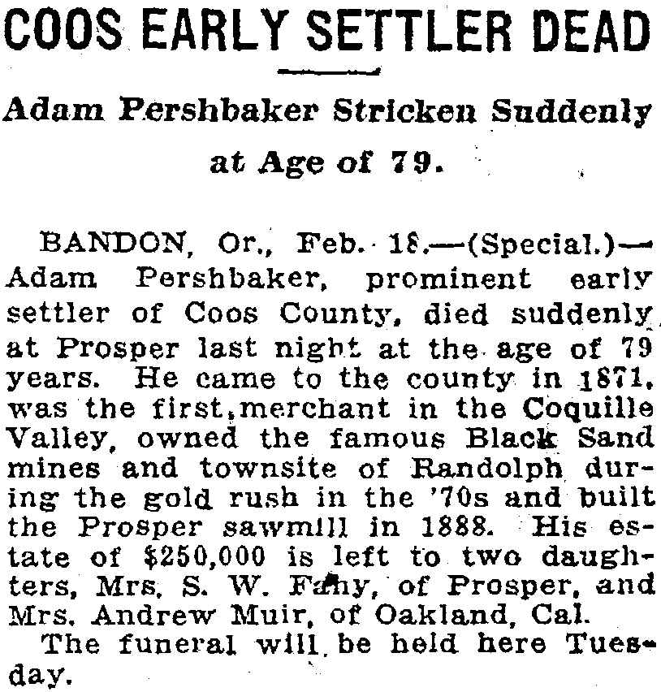
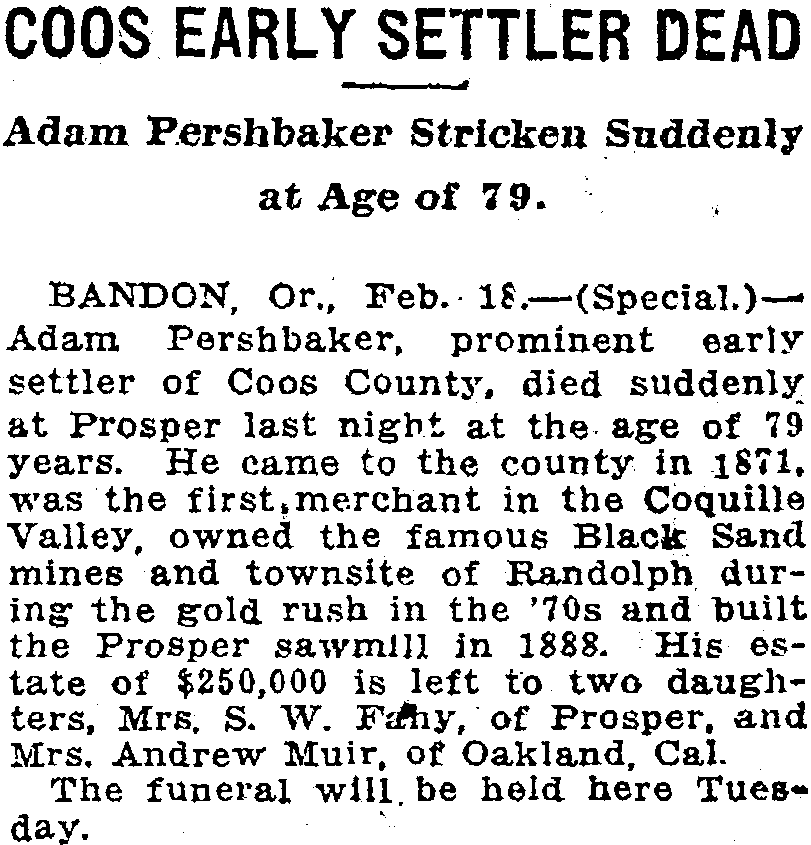

Ruby Pershbaker d. 1973
Great-great-grandmother of Genevieve Elisa Symanski Nelson, wife of Peter.
Ruby Pershbaker was the daughter of Adam Pershbaker and Rosella Dame3,4,5. She died in Feb 1973 in Coquille, Oregon, United States2.
Family
- Parents
- Adam Pershbaker 1838–1917 and Rosella Dame d. 1913 documented
- Partner
- Andrew Muir
- Children
- Edith Evelyn Muir 1916–2018 documented
Life events
| Event | Date | Place and details |
|---|---|---|
| Lived | 18 Feb 1917 | California, United States1 |
| Died | Feb 1973 | Coquille, Oregon, United States2 |
Records




Sources
- Coos Early Settler Dead, The Morning Oregonian (Portland, Oregon), 19 February 1917, p. 4.
His es- i tate of $250,000 is left to two daughters, Mrs. S. W. Fdhy, of Prosper, and Mrs, Andrew Muir, of Oakland, Cal.
Translation: His estate of $250,000 is left to two daughters, Mrs. S. W. Fahy, of Prosper, and Mrs. Andrew Muir, of Oakland, Cal.
Unmarried ('Miss Ruby E. Pershbaker') at her mother Rose E. Pershbaker's death in Oakland on 20 November 1913; married Andrew R. Muir between 1914 and 1916 and was residing in Oakland, California ('Mrs. Andrew Muir, of Oakland, Cal.') at her father Adam Pershbaker's death on 17 February 1917 as co-heiress of his estate.
- Ruby Muir: Social Security Death Index (SSDI) Death Record.
Name: Ruby Muir State of Issue: California Date of Birth: Saturday January 25, 1879 Date of Death: February 1973 Est. Age at Death: 94 years Last known residence: City: Coquille County: Coos State: Oregon ZIP Code: 97423
Social Security Death Index record: Ruby Muir, born Saturday, 25 January 1879, died February 1973 (age 94 years); SSN issued in California (where she lived in Oakland in 1917 and Los Gatos in 1941); last known residence Coquille, Coos County, Oregon 97423.
- Peter's tree, danenberg.sql, 2007–2015, parentages 24.
- Death Notice: Pershbaker — Rose E., San Francisco Chronicle (San Francisco, California), 22 November 1913, p. 19.
PERSEBASETR—In Oakland. November 20. Rop-e K. , beloved wife of Adam Pershbaker. mother of Mrs. c>. W. Kahy and Miss Ruby E. Persli- baker. aud sister of Mrs. Christa Carothers and Joseph Dame, a native of Ohio.
father: Adam Pershbaker; mother: Rosella Dame
- Coos Early Settler Dead: Adam Pershbaker Stricken Suddenly at Age of 79, The Morning Oregonian (Portland, Oregon), 19 February 1917, p. 4; and Oregon Journal, 19 February 1917, p. 8.
Adam Pershbaker, prominent early settler of Coos County, died suddenly, at Prosper last night at the age of 79 years. … His es- i tate of $250,000 is left to two daughters, Mrs. S. W. Fdhy, of Prosper, and Mrs, Andrew Muir, of Oakland, Cal.
father: Adam Pershbaker